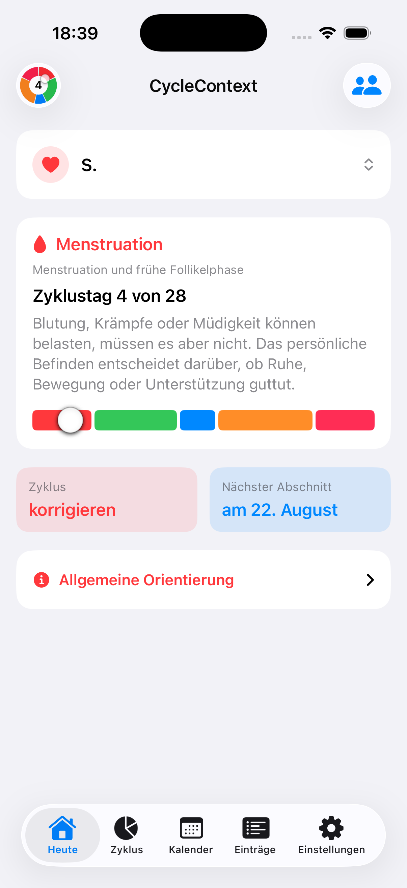
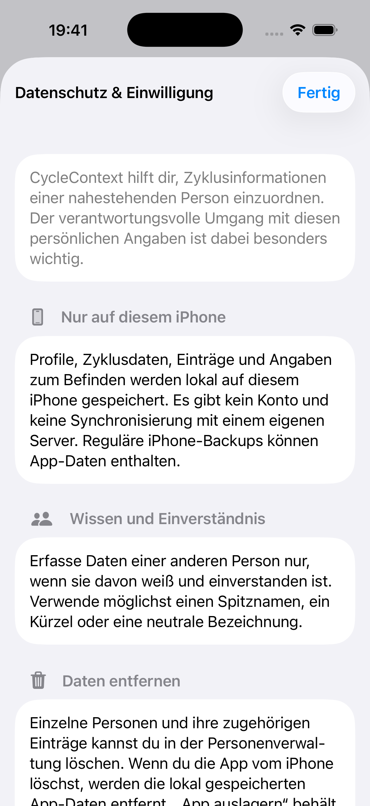
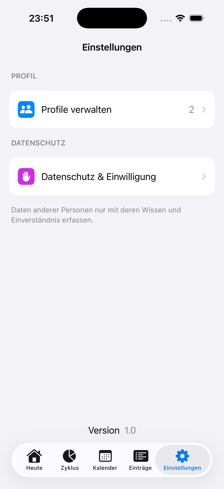

Today at a glance.
Cycle day, current stage, and respectful everyday guidance in one calm overview.
Document your own cycle or respectfully support someone close to you—with private profiles and data stored locally on your iPhone.

Understand today
CycleContext translates an estimated cycle stage into understandable context. See possible physical changes, everyday guidance, and upcoming stages—without predicting feelings or behaviour.
Cycle day, current stage, and respectful everyday guidance in one calm overview.
View upcoming stages and adjust the calendar-based estimate whenever needed.
Personal observations and expressed needs always come before an estimate.
Entries and notes add to the estimate—with what is actually happening.
Neatly separated, each with its own cycle and entries.
Guidance, not a template
The app explains possible patterns. It does not predict how someone will feel or behave.
Drag the dot through the cycle
The uterine lining is shed. Bleeding, cramps, or tiredness can be a burden—but they don’t have to be.
EverydayHow someone actually feels decides whether rest, movement, or support helps.
Follicles develop and oestrogen rises. Some people notice renewed energy during this time.
EverydayA good moment to align on shared plans—without attaching expectations.
Ovulation might happen around this time. The app only shows a careful calendar-based estimate.
ImportantNot suitable for contraception or fertility determination.
Progesterone rises and the body changes. Shifts in sleep, appetite, or temperature are possible.
EverydayNoting observations helps you recognise your own patterns.
Before the next period, symptoms such as tension or headaches may occur. For many people, this time passes unremarkably.
EverydayUnderstand symptoms without assuming them—and when in doubt, ask.
Example based on 28 days. Every cycle is different—you can adjust the estimate in the app at any time.
Personal and separate
Document your own cycle, capture observations, and see what the coming days may bring.
Understand what might be going on—and ask rather than assume. Profiles stay neatly separate.

Private by design
Profiles, cycle data, and entries stay locally on your iPhone in the current version. There is no account and no sync with our own server.
No account, no sync with our own server. Regular iPhone backups may include app data.
Only record someone else’s data if they know about it and agree—ideally using a nickname or initials.
Delete individual profiles and their entries at any time. Deleting the app also removes its locally stored data.
A look inside


Available now
Try everything on iPhone and iPad for seven days without payment details. The trial only begins when you start it in the app.
Download on the App StoreCommon questions
CycleContext is intended for general information, personal documentation, and everyday guidance. It is not intended for diagnosis, treatment, contraception, or fertility determination. Seek medical advice for severe, unusual, or persistent symptoms.
No. You can document your own cycle or respectfully support someone close to you.
No. The app provides calendar-based guidance and general information. Actual wellbeing and personal observations always take priority.
In the current version, profiles, cycle data, and entries stay locally on your device. There is no account and no server sync.
No. You can start right after opening the app—no sign-up required.
No. The ovulation window is only a calendar-based estimate. The app is not intended for contraception or fertility determination.
You can try everything in CycleContext on iPhone and iPad for seven days without payment details. The trial only begins when you start it in the app.